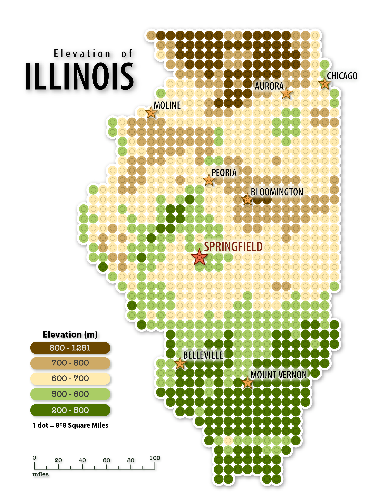

ArcGIS Pro, Adobe Illustrator
2026
Illinois DEM (ISGS)
Illinois City Names
This map is heavily inspired by Atlas Guo's incredible LEGO map series. Eventually, I want to create the map in LEGO Studio to get an idea of how it would look if it were made of real LEGO pieces.